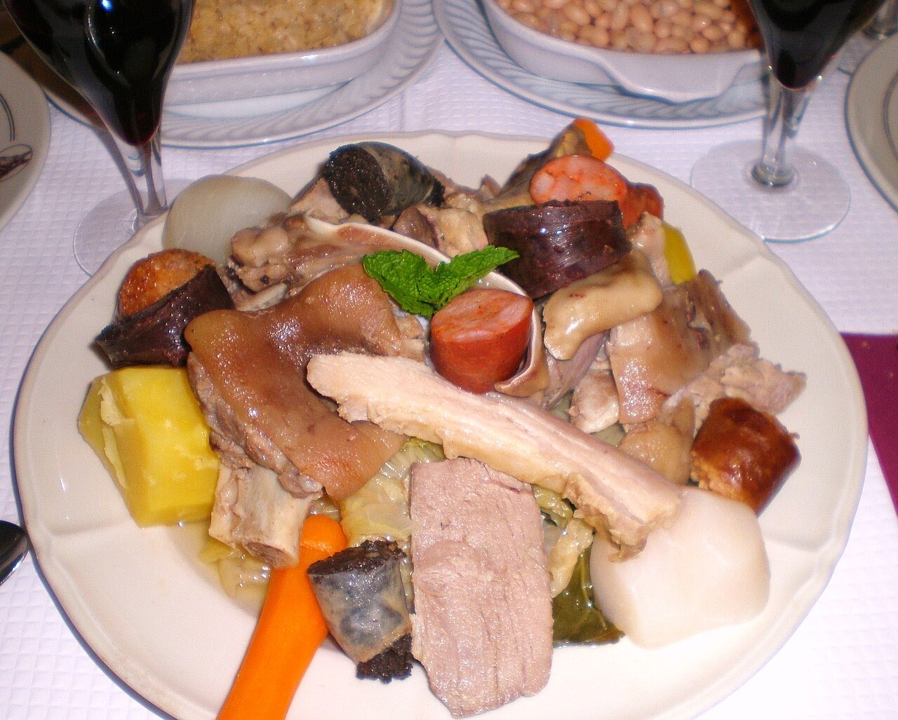

Fotografias ilustrativas — no site final usamos as vossas.
Cozinha tradicional portuguesa · Creixomil
Vitela assada e três salas em Creixomil
Três salas para casamentos, batizados e grupos, com estacionamento para autocarros.
Com bacalhau, rojões e prato do dia na cozinha tradicional.
Peça da mesa por QR code, mesmo em dias de casa cheia.
O Restaurante Bom Amigo serve cozinha tradicional em Creixomil, na Rua Manuel Peixoto, com vitela assada, bacalhau, rojões e cozido à portuguesa. Tem três salas e recebe grupos, casamentos e batizados.

Fotografias ilustrativas — no site final usamos as vossas.
Novo · Pedidos por QR code
Menos espera nas horas de ponta, menos enganos nos pedidos e a equipa livre para servir.
Pedido de reserva
Escolha o dia e a hora — o pedido chega por WhatsApp e confirmamos logo.
↑ Assim chegaria a mensagem ao vosso WhatsApp. (Nesta demonstração nada é enviado.)
Onde estamos
Proposta para Restaurante Bom Amigo
Esta página foi feita de propósito para Restaurante Bom Amigo por João Machado, programador web aqui de Guimarães. Inclui:
Eu trato do alojamento e da manutenção. Sem compromisso.